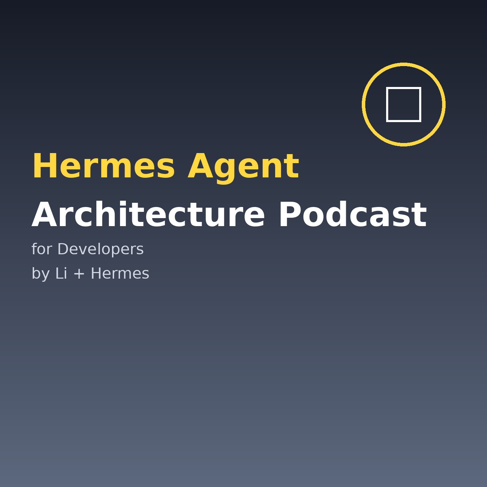

我个人的播客集，记录技术洞察、架构拆解与产品思考。

面向开发者，深入浅出拆解 Hermes Agent 与 OpenClaw 的架构、工具运行时与工程实践。
把 Bitcoin Policy Institute 课程资料转成适合收听的中文播客。覆盖比特币经济学、货币政策、能源挖矿与监管合规。
把 Business Process Management 课程资料转成适合收听的中文播客。当前提供 Week 01 试听版。